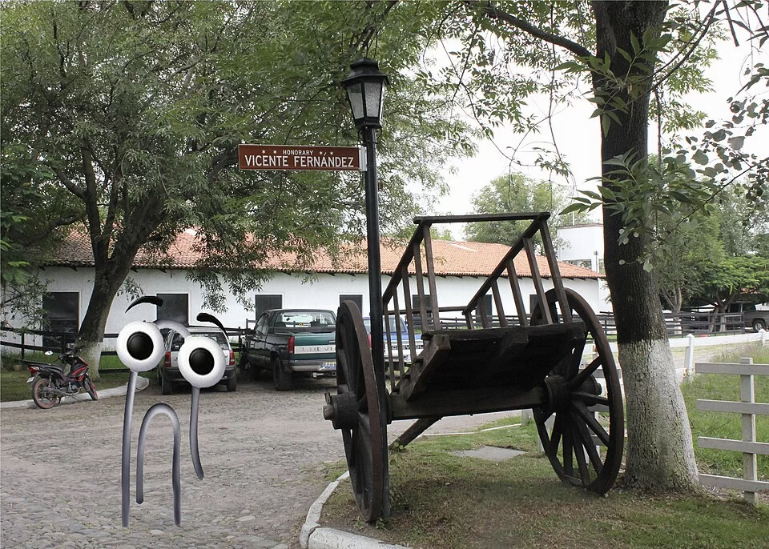
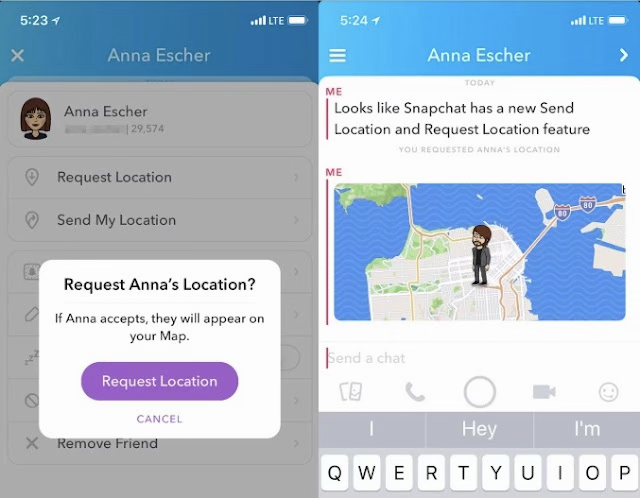

While safety-critical disasters result in physical harm, interface failures in consumer software affect hundreds of millions of daily users. When software updates break user mental models, introduce intrusive automated assistants, induce prompt fatigue, or prioritize monetization over usability, user trust collapses—resulting in mass boycotts, billions in lost market value, and product rollbacks.
Case Study 1: Clippy and the Office Assistant (1996–2003)
Introduced in Office 97, Clippit (universally known as "Clippy") was an animated paperclip virtual assistant designed to make Microsoft Word more approachable through social user interfaces.

Intrusiveness, Lack of Context, and Unwanted Social Presence
- Predictive Engine Failure: Clippy relied on early rule-based behavioral algorithms that attempted to guess user intent. Typing the word "Dear" automatically triggered Clippy to jump onto the screen, blocking the document text.
- Interruption of Flow: The character forced modal focus away from the user's primary task, forcing users to interact with the assistant before continuing to type.
- Ignoring User Research: Focus group testing conducted by Microsoft prior to release indicated strong negative reactions, particularly from female participants who found the character condescending. Microsoft management overrode the research, shipping Clippy as the default enabled assistant until Office 2003, when it was disabled by default before being permanently removed in Office 2007. [1]
Case Study 2: Windows 8 and the Removal of the Start Menu (2012)
In 2012, Microsoft released Windows 8, introducing the "Metro" design language aimed at unifying desktop PCs and touch-screen tablets under a single user experience[6].
| Feature | Windows 7 Desktop | Windows 8 Metro |
|---|---|---|
| Launching apps | Start button opens a menu in the corner | Start opens a full-screen grid of tiles |
| App layout | Desktop apps run in movable windows | Metro apps emphasize full-screen layouts |
| Navigation | Visible controls for mouse and keyboard | Some controls appear through edge swipes or hot corners |

Violation of Established Mental Models
- Removal of the Anchor: Since 1995, the Start Menu had served as the central navigation anchor for desktop computing. Windows 8 completely removed the Start button, forcing desktop PC users with traditional mice and keyboards to navigate a full-screen grid of oversized touch tiles.
- Hidden Gestures and Hot Corners: System functions like shutdown, settings, and app switching were hidden behind invisible screen corners ("hot corners") and edge-swipe gestures. Desktop users could no longer rely on visual signifiers, creating an immense Gulf of Execution. User backlash forced Microsoft to release Windows 8.1 to restore the Start button, followed by Windows 10, which reinstated the desktop menu.
Case Study 3: Windows Vista User Account Control (UAC) Prompt Fatigue
Released in 2006, Windows Vista introduced User Account Control (UAC) to prevent unauthorized malware from silently elevating system privileges.

Designed to Annoy: Prompt Fatigue and Trained Click-Through
- Architectural Intent: Microsoft executives publicly acknowledged at security conferences that UAC was deliberately engineered to annoy users and developers, intentionally creating friction to force software developers to rewrite applications so they wouldn't require administrative privileges [5].
- Prompt Fatigue (Habituation): Routine actions—such as changing the system time, adjusting volume, or launching common utilities—triggered a dark-screen modal popup. Because prompts appeared constantly during normal computer use, users ceased reading the dialog text.
- Security Paradox: Instead of enhancing security, UAC conditioned millions of users to reflexively click "Continue" or "Allow" on every prompt, rendering the security barrier completely ineffective when real malware triggered a prompt.
Case Study 4: The 2018 Snapchat Redesign
In late 2017 and early 2018, Snap Inc. rolled out a massive redesign of the Snapchat mobile application, attempting to separate "social" peer-to-peer interactions from "media" publisher content to increase ad revenue.

Mismatched Navigation and Commercial Overreach
- Jumbling Core Features: The update compressed peer-to-peer private messaging and friends' Stories into a single "Friends" screen on the left, arranged by an unpredictable algorithm rather than chronological order [2].
- Isolating Publisher Content: The right-hand screen ("Discover") was dedicated entirely to corporate publishers, celebrity content, and sponsored ads. Users seeking to view friend updates were forced to navigate past ad-heavy feeds.
- Backlash and Economic Impact: Over 1.2 million users signed a petition on Change.org demanding a rollback. Among 1,941 App Store reviews of the update in markets where it was already widely available, 83% gave it one or two stars.[3] When celebrity influencer Kylie Jenner tweeted that she no longer opened the app, Snap Inc.’s market valuation crashed by $1.3 billion in a single trading day. Snap was eventually forced to issue updates rolling back core layout changes [4].
